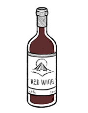

red wine
Wine is made from fermented grapes, with different varieties of grapes and strains of yeast produced different styles of wine. There are many wine variants, like red wine, white wine, rosé wine. fruit wines, honey wines and starch-based wines. Different concentrations of alcohol in the human body have different effects on a person.
Wine is often served with dinner, paired with specific dishes for enhanced flavors. There are sweet wines, to accompany desserts. Wine is also cooked as a flavor agent in dishes, like in stocks or when braising. The acidity of wine lends balance to rich savory or sweet dishes.